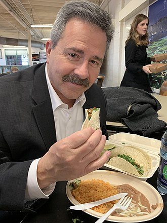
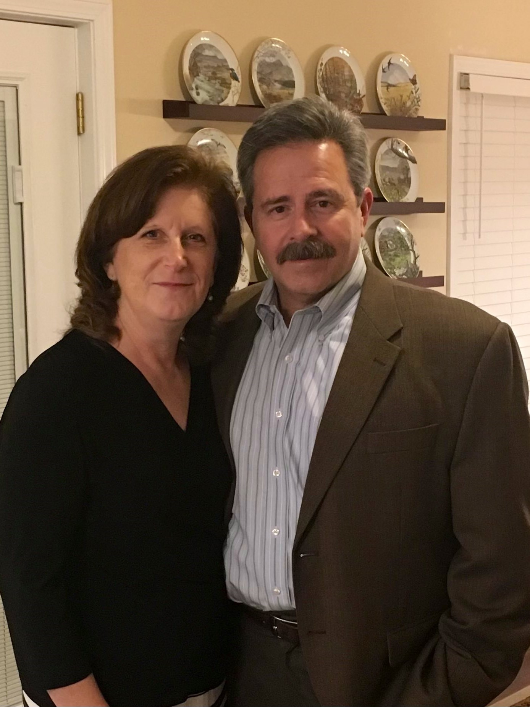

Along with promoting the Catholic faith, Patrick Madrid has for a long time been an avid promoter for tacos, especially tacos on Tuesdays. He is often heard uttering the simple phrase “I like Tacos” at least once every Tuesday during his three hours of air time.
In general Patrick Madrid is a very caring and loving individual. Even in discussions with heated callers, he can retain a remarkably calm and cool composure and he will always thank the callers for calling in and listening to his show even when they pertain a different view than his on varying topics.
In general Patrick Madrid is a very caring and loving individual. Even in discussions with heated callers, he can retain a remarkably calm and cool composure and he will always thank the callers for calling in and listening to his show even when they pertain a different view than his on varying topics.


Patrick Madrid is very much a family man. He was raised the oldest of eight children and currently is the father of eleven kids, and the grandfather of twenty-five. He loves his wife Nancy and often bring up stories of her and him while on air.
Overall, Patrick is a class act. He is very much a scholar on top of everything else and does a wide range of scholastic work such as running seminars at schools and parishes across the United States, guess lecturing at colleges such as Franciscan University of Steubenville, and participating in public debates with Protestant, Mormon, and other non-Catholic spokesmen.
Overall, Patrick is a class act. He is very much a scholar on top of everything else and does a wide range of scholastic work such as running seminars at schools and parishes across the United States, guess lecturing at colleges such as Franciscan University of Steubenville, and participating in public debates with Protestant, Mormon, and other non-Catholic spokesmen.